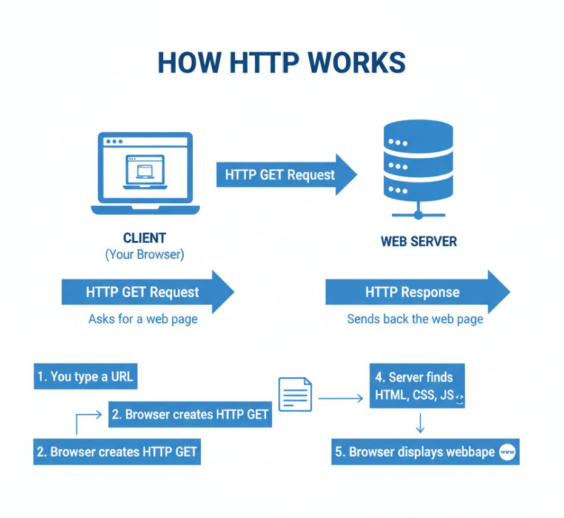

Moving Beyond HTTP/1.1
HTTP/1.1 supported much of the web as it developed, but websites eventually became more complicated. A single page might need to load images, stylesheets, scripts, and other resources. Improving the way these resources are transferred became an important goal for newer versions of HTTP.
HTTP/2
HTTP/2 was standardized in 2015. One of its main features is multiplexing, which allows multiple streams of data to be sent over a single connection. This can reduce delays when a browser needs several resources from a website.
HTTP/2 also uses binary framing instead of the text-based message framing used by HTTP/1.1. It supports header compression, which can reduce the amount of repeated information sent with requests and responses. These changes help make communication more efficient.
HTTP/3
HTTP/3 was standardized in 2022 and uses QUIC as its transport protocol instead of TCP. QUIC operates over UDP and includes features such as connection establishment and encryption.
One advantage of HTTP/3 is that packet loss affecting one stream does not block the delivery of data on every other stream in the same way it can with HTTP/2 over TCP. HTTP/3 can also help connections establish more quickly in situations where its connection features can be reused.
Comparing the Versions
| Feature | HTTP/1.1 | HTTP/2 | HTTP/3 |
|---|---|---|---|
| Transport | TCP | TCP | QUIC over UDP |
| Data handling | Text-based message format | Binary framing | Uses QUIC streams and HTTP framing |
| Multiple streams | Limited by its connection and request handling | Multiplexes streams on one connection | Multiplexes streams using QUIC |
| Major benefit | Persistent connections and broad support | More efficient resource transfer | Improved handling of loss and connections |
Why These Changes Matter
Newer HTTP versions help browsers and servers transfer website resources more efficiently. However, the actual performance improvement depends on factors such as the network connection, server configuration, and website. A newer protocol does not automatically make every website faster in every situation.
Understanding these versions also shows that web technologies continue to change as developers look for better ways to deliver content to users.
